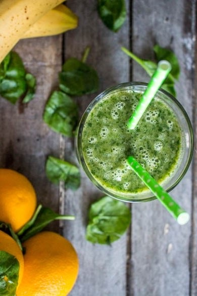
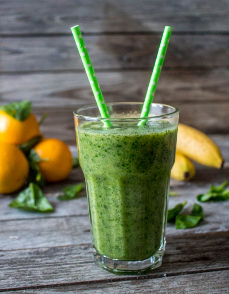

Green smoothie ma boisson vitaminée du moment

Nouveau mois, températures qui commencent à chuter, l’automne qui s’installe bref il est temps de faire une petite cure de vitamines avec un délicieux green smoothie!
Je n’ai pas d’enfants mais avec mon chéri c’est tout comme et comme les enfants il mange difficilement des fruits et des légumes! Alors voila je suis sans cesse en train de chercher des solutions pour lui en faire manger un petit peu et ça marche! Le green smoothie en est une nouvelle 🙂 Très souvent en début d’année on aime bien se faire des petites cures de vitamines et nous nous faisons très souvent de délicieux smoothies! L’autre jour je suis allée boire un smoothie et il y avait de l’épinard dedans! J’ai tenté et j’ai adoré alors j’ai commencé mes petites recherches sur les « green smoothie ».
Les green smoothies sont en réalité très connus et sont une véritable source de vitamines! J’ai découvert le site simplegreensmoothies (en anglais) qui propose tout un tas de recettes différentes et un programme de 30 jours à suivre.
Vous pouvez mettre tout ce que vous voulez dans un green smoothie, tout est question de proportions:
Voici ma recette de base pour 1 grand verre: Un bol de « verdure » type pousses d’épinards, kales, blettes Deux bols de deux fruits différents de préférence Un bol d’eau, de jus d’orange, de lait d’amande,coco, soja etc.. Des épices (curcuma, gingembre, cannelle…)
Voici mon tout premier green smoothie: épinard, pommes, orange et banane!
Ingrédients
- Bananes - 2
- Pommes (ou poires) - 2
- Jus d'oranges - 2 bols
- Pousses d'épinards - 2 bols
Instructions
- Éplucher les pommes et coupez les en quatre
- Couper grossièrement la banane
- Presser les oranges
- Dans le bol de votre blender mettre le tout (pousses d'épinards, banane, pommes, jus d'orange)
- Laisser la machine faire son boulot et c'est prêt!


Les tips de la communauté
Le Green Smoothie reçoit des retours positifs avec appréciation pour le concept de boisson vitaminée et saine.
Astuces
- Utiliser des fruits et légumes frais pour maximiser les bénéfices nutritionnels
- Bien mixer pour obtenir une texture lisse et agréable
Variantes suggérées
- Ajouter différents fruits secs ou frais selon les saisons
- Varier les légumes utilisés pour plus de variété nutritionnelle
Ajustements signalés
- bien s’entraider!! Bisous